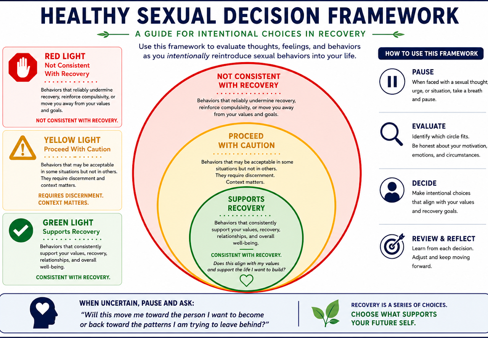
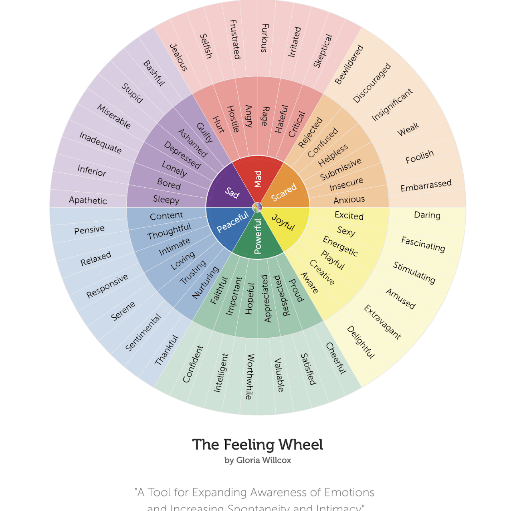

Join our group session
Everything on this site came out of our group. It helps to hear from people who are further along and to say things out loud. We meet through BetterHelp, so you need a BetterHelp membership to attend.
Welcome! This page has all the resources shared during our group therapy sessions. Pick where you're at below to see what fits you.
Transparency vs. honesty.
Honesty is telling the truth when you're asked. Transparency is telling it before anyone has to ask. Stop the little lies, and be open even when it might not go well. That's what rebuilds trust.
Recovery is easier with other people. Start with our group, and add a 12-step meeting if you want more support.
Everything on this site came out of our group. It helps to hear from people who are further along and to say things out loud. We meet through BetterHelp, so you need a BetterHelp membership to attend.
Free 12-step group. Meetings in person, by phone, and online.
Free 12-step group that also covers love and relationship addiction.
Things that come up a lot in our sessions.
For partners: ask your partner to go to group, take notes, and share them with you after.
Sunlight, exercise, healthy food, yoga, sleep, probiotics, and omega-3s.
Medication helps some people with compulsive behavior. Talk to your doctor about whether it's right for you.
Links go to Bookshop.org.
Patrick Carnes
Usually the first book people get recommended. A lot of how sex addiction is treated today comes from this book.
Patrick Carnes
The workbook that goes with Out of the Shadows. Good for your first steps in recovery.
Patrick Carnes
A workbook for the 12 steps. Less rigid and more reflective.
SAA Fellowship
SAA's main book. A must if you're working the SAA program.
Patrick Carnes
Carnes's research on people with sex addiction. Helpful for seeing yourself in the patterns.
Patrick Carnes
About helping someone with sex addiction. Partners and therapists read this one a lot.
Patrick Carnes, David Delmonico & Elizabeth Griffin
About compulsive online sexual behavior. Good if most of your acting out happens on screens.
Robert Weiss
A step-by-step guide for fixing the relationship after you've been caught.
Carol Juergensen Sheets & Vicki Tidwell Palmer
An empathy workbook to help your partner heal. You can do it alone or together.
For the betrayed partner. Helps with the "why did this happen?" question.
Wendy Maltz & Larry Maltz
A guide to spotting and recovering from porn problems. Good for individuals and couples.
How porn changes the brain and how to undo it.
Stephen Arterburn & Fred Stoeker
A Christian book on sexual purity and self-control. Very common in faith-based recovery.
Dr. Anna Lembke
A Stanford psychiatrist on how modern life overloads the brain and what to do about it. Goes well with The Molecule of More.
Daniel Z. Lieberman & Michael E. Long
All about dopamine and why your brain craves what it craves.
Charles Duhigg
How habits form and how to change them. Useful for replacing acting out with something better.
Richard Schwartz
An intro to Internal Family Systems (IFS) therapy. Helps with deep beliefs you have about yourself.
Elizabeth Gillette
Exercises to figure out your attachment styles and why you connect the way you do.
Michael Brown
A 10-week practice for staying in the moment. Helps with the "be where your feet are" part of recovery.
Vex King
About self-love as the starting point for change. More mindset than clinical.
Mark Manson
About choosing what's actually worth your energy. Blunt but helpful.
Steve Moore & Mark Kastleman
Two therapists who are in recovery themselves answer questions from addicts, partners, and couples. Really good on disclosure and rebuilding trust.
From the PBSE hosts
The PBSE hosts' live online program, with sessions for addicts, spouses, and couples.
Jeremy Lipkowitz
What porn does to your brain and body, plus a mindfulness approach to quitting.
The psychology behind porn addiction. A good place to start if you want to understand the why.
A deep dive into shame and how it feeds addiction. It's a longer listen.
A brain coach who makes short videos about porn recovery and what's going on in your brain.
Roy & Jacqueline
Roy and Jacqueline are a husband and wife who are certified recovery coaches. They've been through infidelity and betrayal trauma themselves and work with individuals and couples.
Brené Brown
Brené Brown breaks trust into seven parts called BRAVING: Boundaries, Reliability, Accountability, Vault, Integrity, Nonjudgment, and Generosity. Trust gets built in small, everyday moments.
Apps can help, but they don't replace doing the work. Check each site for current prices.
The most popular accountability app. Your partner gets an easy-to-read report of anything flagged. Faith-based.
Sends weekly reports to up to three accountability partners. Usually cheaper than Covenant Eyes.
Blocks explicit content before it loads. Your partner can stop it from being uninstalled.
Takes random screenshots and sends them to an accountability partner. It monitors instead of blocking. Works best on Android.
Lets you block risky apps and websites.
A physical device that locks the apps you pick until you tap your phone on it again. One-time cost, no subscription. Works best if someone else holds onto it.
A Christian app with streak tracking, daily check-ins, and scripture. Needs a subscription.
Tracks your streak and shows how your brain is recovering. A few apps use this name, so check the reviews before you download.
Files the host shared in group. Free to download and print.

A red, yellow, and green guide for deciding what fits your recovery.

Helps you put a name to what you're feeling.
Write down a trigger, what you were thinking, and how strong your feelings were before and after using a coping skill. Has an example filled in.
What to expect during each month of a 90-day detox.
A 90-day detox, also called sexual sobriety or abstinence, is a common step in sex addiction recovery. It gives you space to heal, figure out your triggers, and build new ways to cope. The goal is to reset unhealthy patterns and work toward healthy intimacy, not to give up sex forever. Plan it with your therapist, and talk it through with your partner if you're in a relationship.
Telling the truth yourself, ideally with help from a therapist, does less damage than your partner finding out on their own. When they find out on their own, they're hurt by the behavior and by the hiding.
Yes. Betrayal hurts, and your healing matters on its own. Pick "I'm a partner" at the top of the page to see resources for you. You can also ask your partner to come to our group, take notes, and share them with you after.
Found something that helped you? Share it and we'll add it. You don't need to give your name.
Suggest a resource